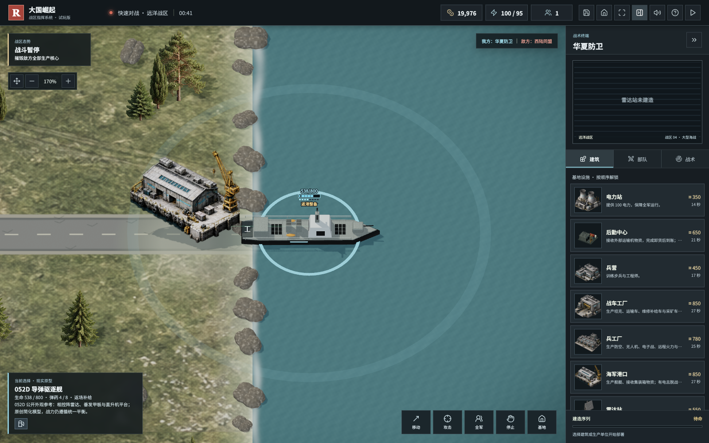
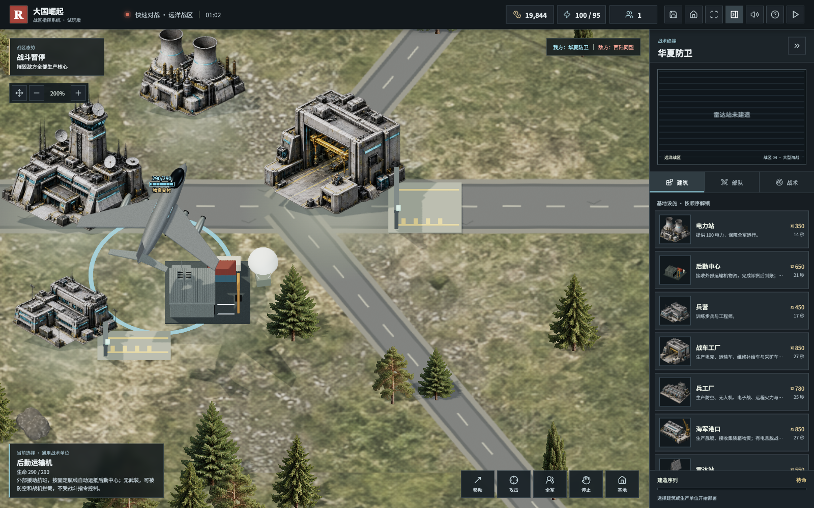
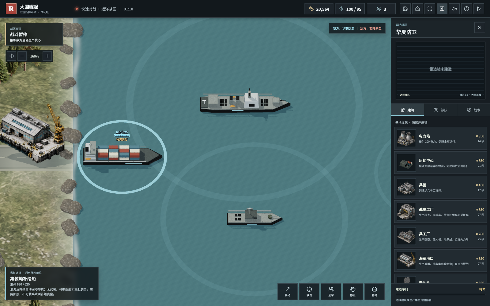
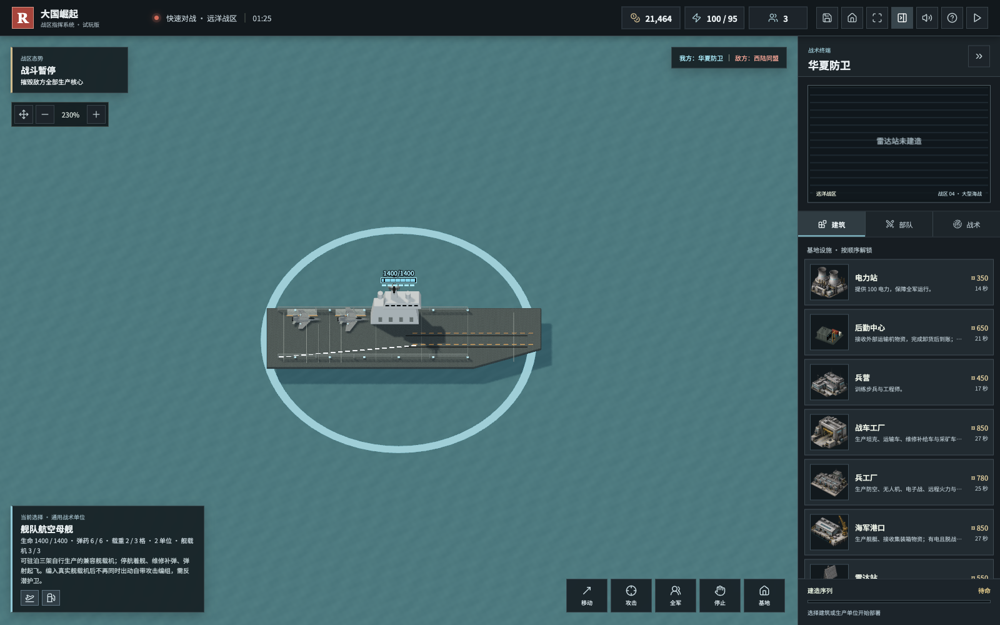
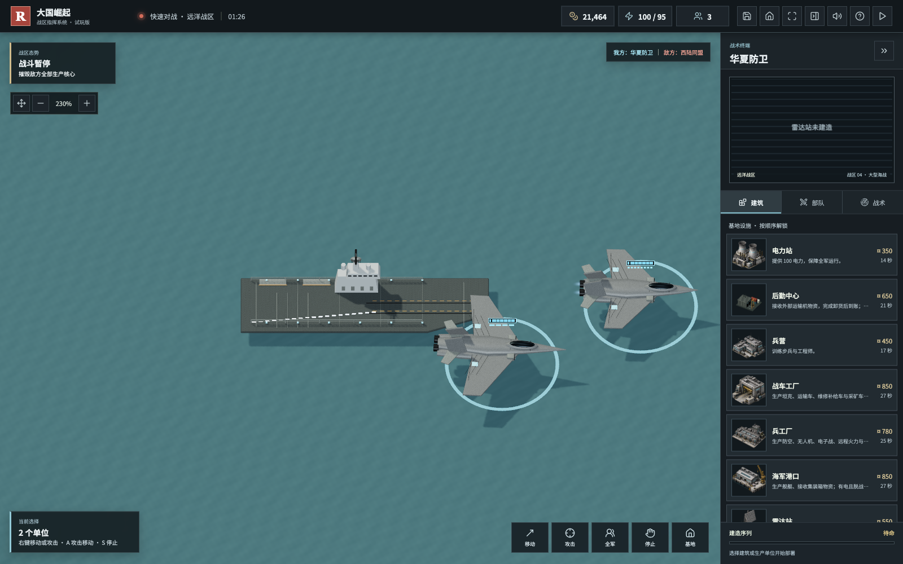
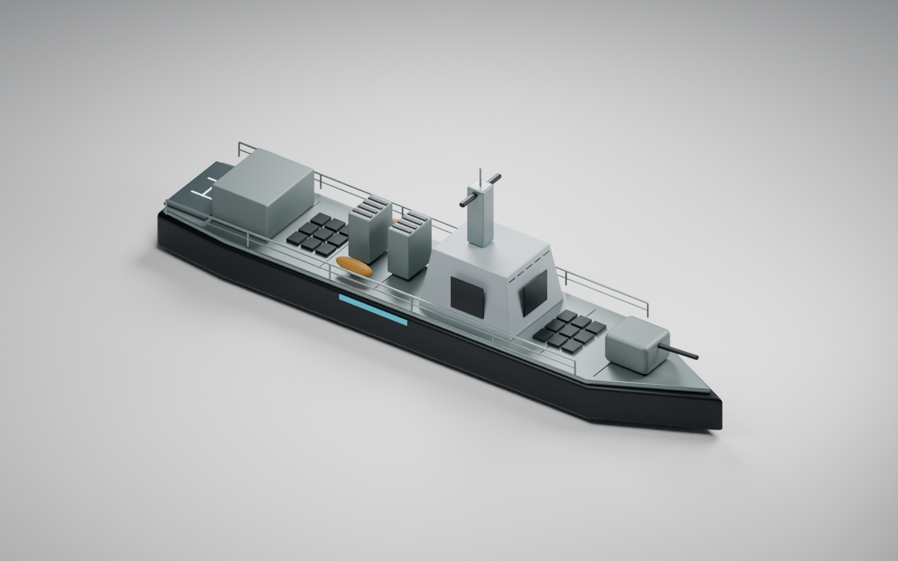
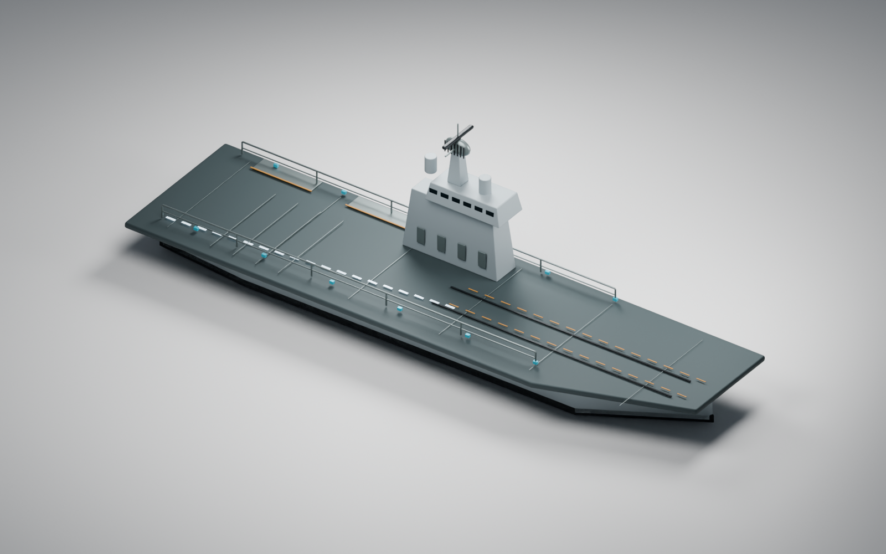
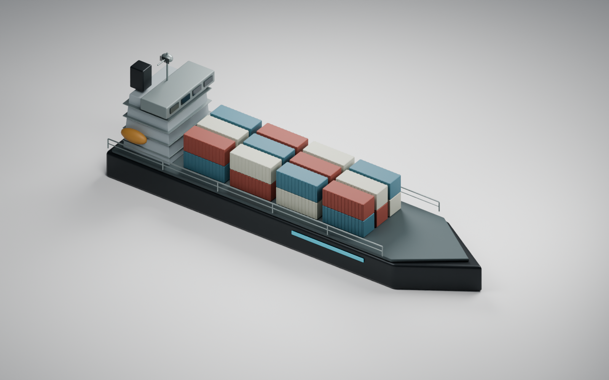
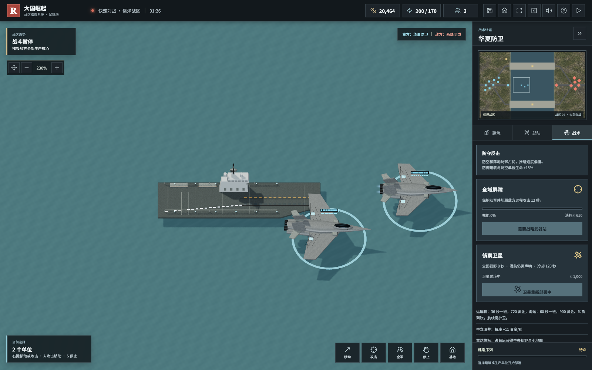

大国崛起 · 国庆开发手记
粉丝一句“别再挖矿了”，我的开源红警变成了后勤战争
陈成 · 2026-10-06
先感谢粉丝 CAI，也感谢继续试玩、留言提建议的朋友。有人认真玩了两个小时，指出补给、中文语音、航母和空战的问题；最近又有朋友提醒：舰艇和潜艇应该能回港维修，常规战区也不该一直靠挖矿赚钱。这些反馈真的进入了代码。
上篇里，我用 GPT 6.1 辅助开发的红警风格开源游戏《大国崛起》，已经有五阵营、六张地图、单机 AI、陆海空单位、存档、受袭警报和离线中文播报。这次 v0.4.0 的重点，是让后勤、舰队和情报真正影响战术。它是原创、非官方作品，不是红警官方续作。
舰船终于可以回港：活着撤退，也是一种胜利

巡逻艇、护卫舰、驱逐舰、航母、潜艇和登陆舰，都可以选中按 R 回己方港口维修补给。服务需要港口存活、正常供电，舰艇停稳并脱离受袭；维修花钱，不是靠近港口就无敌回血。整备完成后离开泊位，给下一艘腾地方。
这让海战多了一层取舍：继续追击，还是保住昂贵舰艇？打敌方运输船，还是先护住自己的港口？潜艇也不能永远潜在海里无限输出。
常规地图不再挖矿，资源真的从运输线上来

新开的常规战局取消矿区和矿车：运输机定期抵达后勤中心，海图还会有集装箱船抵达海军港口。空运每 36 秒一班，完整卸货到账 720；海运每 60 秒一班，完整卸货到账 900。油井依然可以占领，子午月表地图则继续就地采矿。

钱不再只是后台跳一个数字。运输途中能被击毁；设施断电或刚受到攻击，卸货会等待。同类设施不会刷出多倍班次。失去后勤中心时，指挥部只有少量应急空运；没有港口就没有海运收入。双方用同样的规则，AI 也不例外。
现在，防空、侦察、护航和偷袭后方能彼此串起来。不是一味堆更大的坦克，而是让对手没法持续作战。旧存档仍按旧经济运行，避免破坏已玩的战局；体验运输经济请重新开局。
自己的舰载机上航母，而不是只看一个技能特效

大型海图加入舰载制空机、舰载攻击机。造好后右键己方航母登舰，航母最多分配三架；停舰后按 U 起飞。缺弹可以按 R 返舰，维修补弹仍需要安全、供电和资金。这两类飞机分工不同：一类保制空，一类打地面和舰艇。

此前 CAI 建议参考经典《真实战争》的海空可读性。这轮加入了甲板起降、空战盘旋与滚转，以及导弹俯仰、转弯和尾迹。普通战机和重型轰炸机不能随意塞上航母；实际舰载编组和旧内置火力互斥，避免偷偷叠加战力。这仍是即时战略的游戏抽象，不是飞行模拟器。
军迷想看的模型：052D、航母与补给船

国庆这几天，能和军迷朋友一起把熟悉的装备题材做进游戏，很有成就感。对国产装备的喜爱，可以体现在认真观察模型、理解不同兵种职责，以及设计公平的协同与反制上，而不是让某个阵营无条件碾压。


这些 GLB、可编辑 .blend 和生成脚本都随源码提供。052D 参考公开外形，采用原创简化几何，不复制厂商网格或真实工程尺寸；武器射程、价格、弹药都是游戏平衡值。舰载机用通用模型，不把歼-20 冒充现实舰载型号。目前的画面还没有达到商业大作的精度，这一点不回避。
052D 外形定位的公开参考：国防部资料
https://www.mod.gov.cn/djzx/4809824.html
卫星来了，但不会永久开全图

建好雷达和实验室后，花 1000 资金获得 8 秒揭雾，冷却 120 秒，敌方会收到过境预警。结束后恢复实时战争迷雾，已探索地形留在地图上；卫星不能替代声呐或反隐。这是进攻前的一次情报窗口，不是永久透视开关。
技术只说一点：先让规则闭环，再让画面呈现
界面命令 → Game 战局与 AI
├─ 运输班次、卸货、收入
├─ 有限弹药、港口、实际舰载机
└─ 卫星、迷雾、存档
战局状态 → Three.js 场景、模型与交战反馈
Blender 原创资产 → GLB → 离线 PLAY.html原生 JavaScript、Vite、Three.js、PathFinding.js、Lucide；离线试玩不需要安装开发环境。
运输、整备和舰载机规则有独立测试；桌面浏览器则验证实际回血、到账、起飞、卫星操作、存档和非空画布。截图来自真实渲染的固定验收场景，不用概念图冒充已完成的游戏。自动验证能挡住明显回归，但竞技平衡仍需要大家多玩。
接下来做什么，哪些还没做
当前仍是单机。双人局域网计划采用权威服务端：客户端发命令，服务端校验资源、视野和战斗，再广播状态；验证同步和断线恢复后才扩展公网，不把共享网页网址当成联机。
东风题材的战略单位、可选核规则、更多月球基地科技与空天题材，还在路线图。会围绕代价、准备时间、预警和反制设计，而不只是增加一个强大模型。城市驻军、可破坏桥梁和地图编辑器也尚未完成。国产商店方向需要目标系统实机验证与申请审核，不能仅靠一个 ZIP 宣称上架。
中文语音已经有断网合成兜底和排查教程。这轮还修复了暂停时点击“试听中文”没有反应的问题；机械感仍比较明显，后续争取授权清晰的真人应答。主要精力继续放在桌面端，不将手机展示作为这轮重点。
一起把这个开源游戏养得更好
欢迎下载试玩，也欢迎到 GitHub 提建议、修问题、补模型、做地图和参与维护。反馈最好带上地图、阵营、发生时间、截图、设备与复现步骤；这比一句“不好玩”更容易变成下一次更新。
开源代码：大国崛起
https://github.com/chencheng666/great-powers-rts
v0.4.0 离线游戏与图文素材下载
https://github.com/chencheng666/great-powers-rts/releases/tag/v0.4.0
提交建议与问题
https://github.com/chencheng666/great-powers-rts/issues
中文语音排查教程
https://github.com/chencheng666/great-powers-rts/blob/main/docs/中文语音使用教程.md
从一个试玩原型，到现在的后勤战争，最有意思的不是多了一艘船，而是留言正在改变游戏。感谢 CAI，也感谢每一位认真玩的朋友。继续更新，大家一起共建。